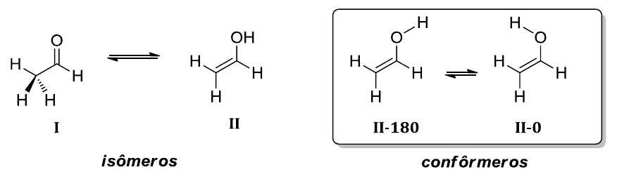

Experimento 3: busca conformacional
Neste experimento você encontra os confôrmeros de menor energia de um sistema simples e calcula suas populações. Veja a base teórica em Superfície de energia potencial.
Exercício 5: busca conformacional manual
Vamos estudar o equilíbrio ceto-enólico do acetaldeído (I) e de sua forma enólica (II) com DFT. Por ser um caso simples, a busca dos confôrmeros pode ser feita manualmente. Calcule os confôrmeros indicados abaixo com o funcional B3LYP, associado à correção empírica de dispersão D3BJ, e a função de base 6-31G*. Depois, a partir das energias, indique o equilíbrio em porcentagens pela distribuição de Boltzmann a 25 °C.

Crie os inputs das geometrias com os passos anteriores. Algumas palavras-chave não estão disponíveis no GABEDIT e precisam ser editadas à mão; a linha do método deve ficar assim (uma boa escolha para buscas conformacionais em geral):
! B3LYP TIGHTSCF Opt D3BJ 6-31G*Distribuição de Boltzmann
As populações seguem a distribuição de Boltzmann. Lembre-se de converter as energias de hartree (1 Eh = 2625,5 kJ/mol). O script abaixo faz a conta:
import numpy as np
# energias finais em hartree: SUBSTITUA pelos valores dos seus cálculos
E = {"I": -153.000000, "II-180": -152.980000, "II-0": -152.982000}
R, T = 8.314462618e-3, 298.15 # kJ/(mol K), K
dE = {k: (v - min(E.values())) * 2625.4996 for k, v in E.items()} # kJ/mol
w = {k: np.exp(-v / (R * T)) for k, v in dE.items()}
for k in E:
print(f"{k:7s} dE = {dE[k]:7.2f} kJ/mol p = {100 * w[k] / sum(w.values()):6.2f} %")- Calcule as porcentagens de cada espécie pela distribuição de Boltzmann.
- Explique a conformação preferencial da cetona I e das formas enólicas (efeitos estéreos e eletrônicos).